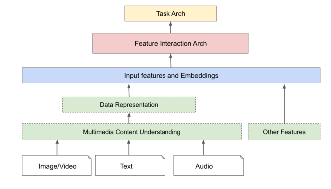
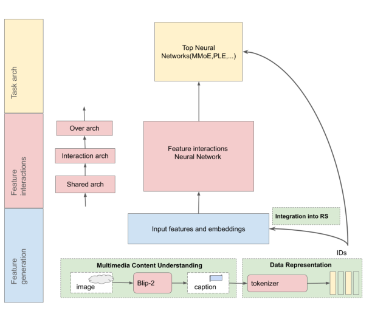
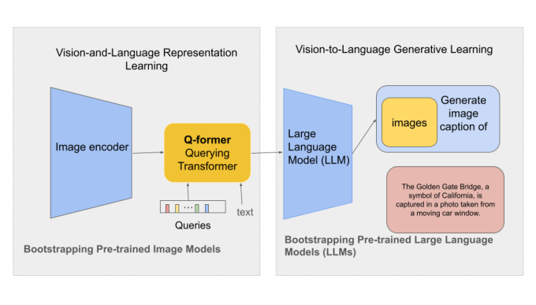
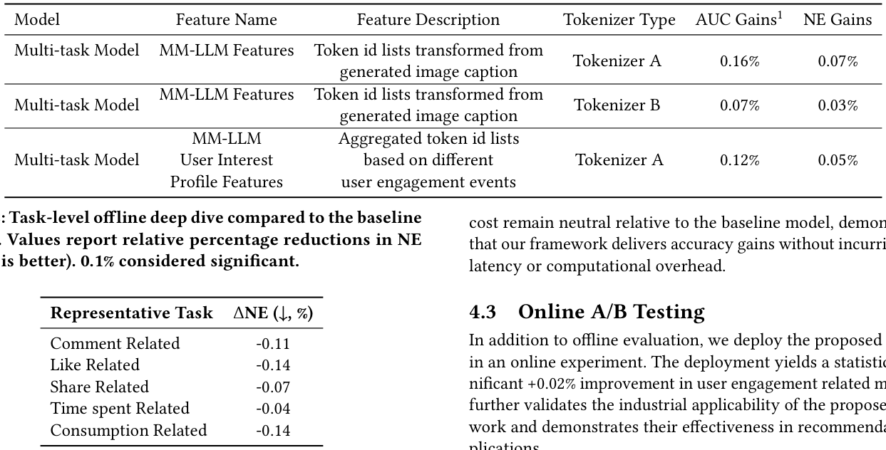
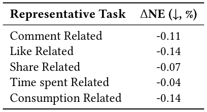

A General Framework for Multimodal LLM-Based Multimedia Understanding in Large-Scale Recommendation Systems (大规模推荐系统中基于多模态大模型的多媒体理解通用框架)
- 会议/期刊: SIGIR 2026 (Short Paper)
- 推荐链路定位: 精排 (CTR/Multi-Task Ranking) — 以特征工程方式为 DLRM 式多任务精排模型注入语义特征
- 研究方向: 多模态推荐 / 大语言模型推荐 (LLM4Rec)
- 论文原文: https://arxiv.org/abs/2605.09338v1
- 开源代码: 暂未开源
TL;DR (核心速览)
针对工业推荐系统仅用静态视觉 embedding、无法刻画高阶语义（如"人与狗玩耍"而非仅"狗"）的痛点，本文提出一个三阶段通用框架：用 MM-LLM（BLIP-2 + LLaMA2-1.5B）把图像翻译成自然语言 caption，再经 tokenizer 映射为离散 token ID 序列，作为类别特征与 ID embedding 拼接注入 DLRM 式多任务精排模型。在 Meta 内部十亿级交互数据（7:1 划分）上，离线 AUC 相对提升 0.35%、NE 降低 0.07%，线上 A/B 用户互动指标 +0.02%，且训练/推理开销基本中性。
Background & Motivation (背景与动机)
- 领域背景与主流范式: 工业多模态推荐主流做法是用 CNN（如 VBPR 的视觉编码器）或 BERT 类文本编码器抽取模态特征，再通过 cross-attention 或拼接方式与 ID embedding 融合（MMRec 等统一框架）。特征本质是"静态视觉概念 + 预计算 embedding"。
- 现有方法局限 (Limitations of Prior Work):
- 语义粒度不足：传统视觉编码器只能识别离散实体（"狗"），无法编码高阶上下文依赖（"一个男人在和他的狗玩耍"），在时尚检索等场景中视觉细微风格偏好无法被静态文本描述覆盖。
- 多模态信号被降级为辅助元数据：原始多媒体流中的细粒度语义与潜在上下文被 bypass，错失与高保真用户意图对齐的机会。
- 生成式输出与高吞吐架构的阻抗失配：MM-LLM 输出的是非结构化生成文本，而 DLRM 类系统要求稠密/稀疏结构化特征，且受严格延迟约束，直接集成困难。
- 核心挑战 (Key Challenge): 为什么不能简单加深视觉网络或做常规多模态融合？因为问题不在"视觉特征不够强"，而在"视觉特征缺少语言化的高阶语义与可解释的语义概念"，且工业系统对在线延迟极度敏感，无法在精排主路径上跑大模型。
- 核心洞察与切入点 (Key Insight): 将 MM-LLM 定位为离线的"语义翻译器"——把多媒体内容蒸馏为自然语言描述，再 tokenize 成与现有 ID 特征同构的离散类别特征，从而以"零架构改动、零在线延迟增量"的方式把语义注入推荐栈。同时用 caption 序列进一步构造用户兴趣画像，追踪用户对语义概念的长期偏好。
Problem Formulation & Method (问题定义与方法架构)
1. 符号定义与输入表征 (Notations & Input Representations)
- 用户集 \(\mathcal{U}\)、物品集 \(\mathcal{I}\)，交互样本规模达十亿级（tens of billions of interaction examples）。
- 物品多媒体输入：原始图像 \(x^{\text{img}}\)（及文本、音频信号，框架层面通用）。
- 传统输入：用户/物品稀疏 ID embedding。
- 本文新增输入：MM-LLM 生成的 caption 文本 \(c = f_{\text{MM-LLM}}(x^{\text{img}})\)，经 tokenizer 映射为离散 token ID 序列 \(\mathbf{t} = \text{Tok}(c) = [t_1, \dots, t_L]\)。
- 输出：多任务精排模型的各任务预测（评论/点赞/分享/时长/消费相关），以 AUC 与 NE 评估。
2. 整体流水线 (Overall Architecture)
三阶段流水线：语义翻译 → 表征映射 → 特征注入。
flowchart TD
A["输入层: 物品原始图像 (及文本/音频)"] --> B["阶段1 多媒体内容理解: BLIP-2 (Q-Former) + LLaMA2-1.5B 生成 caption"]
B --> C["阶段2 数据表征: 归一化 + Tokenizer 映射为离散 token ID 序列"]
C --> D["构造物品内容特征 + 用户兴趣画像特征"]
D --> E["阶段3 特征注入: 与稀疏 ID embedding 拼接"]
E --> F["DLRM 式多任务精排模型"]
F --> G["多任务预测 (Comment/Like/Share/Time/Consumption)"]

3. 核心模块设计与数学原理 (Key Designs & Formulations)
(1) 多媒体内容理解（MM-LLM 语义翻译）
采用 BLIP-2 范式：图像编码器先产生视觉 embedding，再由轻量 Querying Transformer (Q-Former) 通过特定 prompt 将视觉特征对齐到语言模型 embedding 空间，最后由生成式文本解码器 LLaMA2 合成详细 caption。为满足工业延迟约束，选用 1.5B 参数的紧凑版 LLaMA2 以保证高 QPS 与严格 serving 预算内的推理延迟。

关键工程决策：条件触发（conditional invocation）——仅当多媒体理解能带来最大边际收益时才调用 MM-LLM；且推理与核心排序路径解耦（decoupled inference），使系统开销与训练复杂度保持中性。
(2) 数据表征与对齐（Tokenization）
原始 caption 先做归一化去冗余、统一格式，再由专用 tokenizer 映射为离散 token ID 序列。核心设计直觉：离散 token ID 与推荐系统已有的类别特征（categorical feature）同构，因此可无缝进入 DLRM 的稀疏特征表，无需为连续稠密向量设计新的特征通路。这些序列不仅表征物品内容，还被用于构造用户兴趣画像——按用户互动事件聚合其历史消费内容的语义 token，刻画用户对特定语义概念的偏好演化。
(3) 特征注入（Integration）
将 tokenized 内容特征与用户兴趣画像特征，与用户/物品的传统稀疏 ID embedding 拼接（concatenation），送入任务特定模块。模型同时利用协同信号与 MM-LLM 富化的语义特征联合优化预测精度。由于是纯特征层注入，推荐模型主干架构无需任何修改。
4. 训练目标、负采样与推理复杂度 (Optimization, Negative Sampling & Complexity)
- 损失函数: 原文未报告具体损失公式。系统为多任务模型，以 NE（Normalized Entropy）与 AUC 作为优化/评估目标，推测为各任务 logloss 加权（原文未给出权重与公式）。
- 训练负采样策略: 原文未报告（工业多任务精排通常为全曝光样本上的点式 logloss，非负采样排序）。
- 时间与空间复杂度:
- MM-LLM 推理为离线/条件触发，与排序主路径解耦；原文明确声明"model training QPS and the online inference cost remain neutral relative to the baseline model"。
- 具体单次推理延迟 (ms/request)、峰值显存、离线 caption 生成总耗时：原文未报告。
- 由于特征以离散 token ID 形式进入稀疏特征表，在线侧仅增加 embedding lookup，不引入大模型前向计算。
Experimental Setup & Evaluation Protocol (实验设置与评估协议)
- 数据集统计与预处理: 使用 Meta 内部大规模数据集，十亿级交互样本，按 7:1 划分训练/评估。原文未披露用户数、物品数、稀疏度及过滤规则（无 5-core 等公开基准过滤）。
| 数据集 (Dataset) | 用户数 (#Users) | 物品数 (#Items) | 交互数 (#Interactions) | 稀疏度/密度 (Sparsity) | 模态/辅助特征说明 |
|---|---|---|---|---|---|
| 内部工业数据集 | 原文未报告 | 原文未报告 | 十亿级 (tens of billions) | 原文未报告 | 图像（caption 化）+ 用户互动事件 |
- 数据划分方式 (Splitting Strategy): Ratio Split (7:1)。原文未说明是否按全局时间戳切分，存在潜在时间穿越风险（若为随机划分，则未来交互可能进入训练集），这是本文评估协议的主要薄弱点。
- 排名评测协议 (Ranking Protocol): 非排序式评估，采用工业多任务点式指标 AUC 与 NE，在全量曝光样本上计算，不涉及负采样候选集。
- 评价指标与显著性检验: 报告 AUC 相对增益（以 1-AUC 的百分比变化计） 与 NE 相对降低；多任务取平均。显著性：在多个不重叠、独立采样的评估子集上做 paired t-test，\(p < 0.01\)。作者声明因模型复杂度极高，+0.1% 即视为显著。另做了 shuffle-all 特征重要性分析。
Key Experimental Results (核心实验结果)
1. 主实验对比 (Main Results)
基线为已使用视觉编码器 embedding 拼接的生产推荐模型，本文在其上增量加入 MM-LLM 特征。

| 模型 | 特征 | Tokenizer | AUC 增益 (1-AUC 相对) | NE 增益 |
|---|---|---|---|---|
| Multi-task Model | MM-LLM Features（caption token ID 序列） | Tokenizer A | 0.16% | 0.07% |
| Multi-task Model | MM-LLM Features（caption token ID 序列） | Tokenizer B | 0.07% | 0.03% |
| Multi-task Model | MM-LLM User Interest Profile Features（基于不同互动事件聚合的 token ID 序列） | Tokenizer A | 0.12% | 0.05% |
注：摘要中"0.35% AUC 提升"为多任务/多特征组合的整体口径，表 1 中单特征口径最高为 0.16%；原文未给出 0.35% 的逐项拆解表。
任务级深入分析（表 2）：

| 代表性任务 | ΔNE (↓, %) |
|---|---|
| Comment Related | -0.11 |
| Like Related | -0.14 |
| Share Related | -0.07 |
| Time spent Related | -0.04 |
| Consumption Related | -0.14 |
可见点赞与消费类任务收益最大（-0.14%），分享与时长类任务收益较小，说明语义特征对"内容偏好匹配"类目标更有效，对"时长"这类受多因素干扰的目标贡献有限。
2. 消融实验与控制变量分析 (Ablation Study)
- 移除 MM-LLM 特征：性能出现相应下降，证明增益确实归因于 MM-LLM 特征而非其他因素。
- Tokenizer 对比：Tokenizer A 显著优于 Tokenizer B（AUC 0.16% vs 0.07%），作者强调"合适的 tokenizer 带来更显著提升"，凸显表征映射阶段的重要性。
- 特征重要性：shuffle-all 分析显示 MM-LLM 特征位列全部生产特征的前 1%。
- 控制变量严谨性：原文未报告参数量对齐、特征维度对齐等严格控制实验；消融为"移除特征"式，未做随机同维特征替换的 placebo 对照。
3. 稀疏度/冷启动分桶与超参敏感度 (Sparsity Buckets & Hyperparameters)
- 长尾/冷启动分桶: 原文未报告。未按用户/物品交互频次分桶分析，无法判断语义特征是否对长尾物品或冷启动用户增益更大——这本应是 MM-LLM 语义特征最有说服力的场景。
- 关键超参数敏感度: 原文未报告。未分析 caption 长度、token 序列截断长度 \(L\)、LLaMA2 规模（1.5B 之外）、条件触发阈值等的影响。
- 线上 A/B 测试结果: 已部署线上实验，用户互动相关指标取得统计显著的 +0.02% 提升。原文未披露实验周期、流量占比、具体指标名称（CTR/CVR/时长等）及置信区间。
Highlights, Limitations & Critiques (亮点、局限与审稿级批判)
- 核心亮点与可迁移性:
- "语义翻译 + 离散 token 化"的桥接思路极具工程普适性：把生成式模型输出转成与 ID 特征同构的类别特征，绕开了稠密向量注入所需的架构改造，可零成本迁移到任意 DLRM 式系统。
- 用户兴趣画像的构造：用 caption token 序列按互动事件聚合用户语义偏好，是把内容理解与行为信号对齐的巧妙设计，可迁移到短视频、图文电商等场景。
- 条件触发 + 推理解耦的部署范式，为工业界引入大模型提供了可复用的成本控制模板。
- 局限性与审稿视角批判 (Critical Limitations):
- 评估协议薄弱：仅内部数据集、7:1 划分未说明时间切分，存在数据穿越风险；无公开基准（Amazon/Yelp/KuaiRec 等）复现，外部效度存疑。
- 增益量级极小且口径不清：摘要 0.35% AUC 与表 1 单特征最高 0.16% 之间存在口径落差，原文未给出拆解；线上 +0.02% 虽称显著，但缺乏置信区间与实验周期，工业读者难以判断稳健性。
- 关键实现细节缺失：损失函数、负采样、tokenizer 具体方案（A/B 差异）、caption 长度、延迟数值、显存开销均未报告，复现性差。
- 缺少最有说服力的分析：未做长尾/冷启动分桶、未做超参敏感度、未与纯 LLM 文本 embedding（如 RLMRec/AlphaRec 式稠密表征）做对照，无法说明"离散 token 化"相对"稠密语义 embedding"的优越性来源。
- Short paper 体量下框架性大于方法性：三阶段框架本质是工程流水线抽象，缺少新的学习目标或理论分析，创新性偏应用集成。
Rating (四维评分)
- 方法创新性 (Novelty): ⭐⭐⭐
- 评估协议与实验扎实度 (Protocol & Experiments): ⭐⭐
- 写作与数学规范度 (Clarity & Rigor): ⭐⭐⭐
- 工业落地与复现价值 (Industrial & Practical Value): ⭐⭐⭐⭐